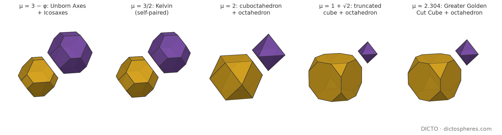
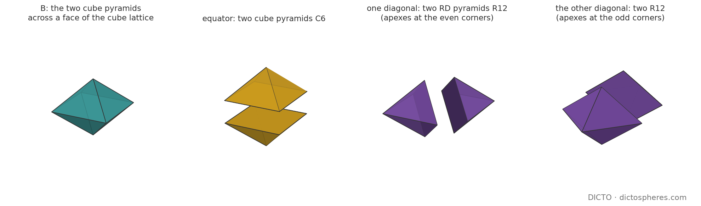
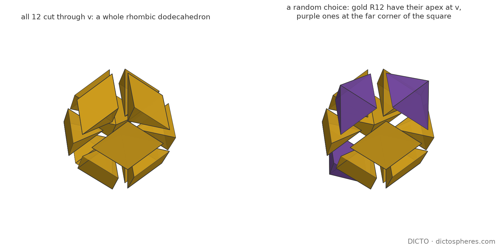

Theorem: every pair of the caesium chloride walk from the octahedron to the cube, and every pair of the Delian walk from the rhombic dodecahedron to the cube except the octet, fills space in exactly one way, face to face or not; the rhombic dodecahedron's centre pyramids, in contrast, tile face to face in uncountably many ways, one free choice of diagonal on every face of the cube lattice
Version 3 corrects the notes on methods: the names of our computers and private file paths are removed, with small wording fixes. No result changes.
Cut a cube's corners with a growing octahedron and a second, smaller solid appears in the gaps; together the two fill space as caesium and chloride ions do in a salt crystal. We ask whether the two pieces could fill space in any other way, as the octet's pieces can be stacked in layers. They cannot: along the whole walk the pieces lock into their crystal and nowhere else, because at every edge the angles leave only one choice and no edge can rest on a face. The pyramids of the rhombic dodecahedron are free instead: on every face of a cube grid, one of two diagonals can be chosen.

The CsCl walk. Put C = [−1, 1]³ and C* = {|x| + |y| + |z| ≤ 1}. For 1 < μ < 3 let Pμ = C ∩ μC* at the points of 2ℤ³ and Qμ = C ∩ (3 − μ)C* + (1, 1, 1) at the points of 2ℤ³ + (1, 1, 1); these cells fill space, the CsCl tiling (#90, Proposition 6 [1]; the weight walk of #52 and #53 [2, 3]; #48's T(x) [4]). For 1 < μ < 2 both are truncated octahedra; Pμ has squares of edge a = √2(μ − 1) and hexagons with edges a and b = √2(2 − μ) alternating, and Qμ = P3−μ has the two lengths exchanged. Kelvin's cell is μ = 3/2 (P = Q), DICTO's Unborn Axes and Icosaxes are μ = 3 − φ and φ [1]. At μ = 2, P is the cuboctahedron and Q the octahedron. For 2 < μ < 3, P is a cube with cut corners (octagons and triangles; the Archimedean truncated cube at 1 + √2, the Greater and Lesser Golden Cut Cubes at μG ≈ 2.304 and μL ≈ 2.534 [1]) and Q is a regular octahedron of edge √2(3 − μ), the edge of P's triangles. The walk is symmetric: μ and 3 − μ give the same tiling with P and Q exchanged, so μ = 1 is the cuboctahedron again.
The Delian walk. Paper #51 [5] cuts every double cone of the octet (from a tetrahedron's centre through a shared face to an octahedron's centre) by one plane parallel to the face, at fraction t, and gives each side to its own centre. For 0 < t < 1/3, T(t) is a regular tetrahedron and O(t) the rhombic dodecahedron with its eight three-fold corners cut (8 triangles, 12 hexagons); for 1/3 < t < 1, O(t) is a regular octahedron and T(t) the cube with four alternate corners cut (4 triangles, 6 hexagons), Samson and Delilah at the Delian bond. At t = 1/3 the pieces are the octet's solids, at t = 0 the rhombic dodecahedron alone, at t = 1 the cube.
Tilings. As in #92 [6]: congruent copies of the given pieces at the given size (mirror images allowed; all pieces here are mirror-symmetric), disjoint interiors, finitely many meeting any bounded set. Face to face means any two tiles meet in a common face of both or not at all. We write α = arccos(1/3) ≈ 70.53° for the tetrahedron's dihedral angle; α/π is irrational, because 2 cos α = 2/3 is not an algebraic integer.
Along both walks the pieces can fill space only as their own crystal. The freedom found in #92 belongs to the regular tetrahedron and octahedron together, and the walks pass through that point only once. The rhombic dodecahedron's pyramids are the opposite case: they fill space in more ways than can be listed, even face to face.
The dihedral angles of every piece are made of π and the one irrational angle α, so the angle sum round an edge allows only very few combinations.
By #44, Lemma 1 [7], at all but finitely many points x of an edge of a tile the wedges of the tiles containing x add up to 2π, or to π when x lies inside a face of another tile (the angle sum also used by Gabbrielli, Jiao and Torquato [8]). The dihedral angles are: β = π/2 + α/2 ≈ 125.26° (cos β = −1/√3) between a square or octagon and a hexagon or triangle of the CsCl cells; γ = π − α ≈ 109.47° (cos γ = −1/3) between two hexagons of a truncated octahedron and at the octahedron's edges; π/2 between two octagons of a truncated cube; for the Delian walk α (tetrahedron), π − α/2 at the triangles and 2π/3 between hexagons of the cut rhombic dodecahedron, π − α (octahedron), (π + α)/2 at the triangles and π/2 between hexagons of the cut cube. Since α/π is irrational, comparing the coefficients of α and of π in each sum gives Table 1.
| Pieces | Round an edge (2π) | On a face (π) |
|---|---|---|
| CsCl walk, 1 < μ ≤ 2 | 2β + γ | none |
| CsCl walk, 2 < μ < 3 | 2β + γ; 4 · π/2 | 2 · π/2 |
| Delian walk, 0 < t < 1/3 | α + 2(π − α/2); 3 · 2π/3 | none |
| Delian walk, 1/3 < t < 1 | (π − α) + 2(π + α)/2; 4 · π/2 | 2 · π/2 |
| cube pyramid C6 (π/4 at the base, 2π/3 at the lateral edges) | 8 · π/4; 3 · 2π/3 | 4 · π/4 |
| RD pyramid R12 (π/3, π/2, 2π/3) | seven combinations | three combinations |
Table 1. All combinations of wedges round a generic point of an edge (pairing_checks.py, Part A, exact enumeration). In each walk the γ-type angle (γ, α or π − α) occurs at most once, and only the right angles of the truncated and cut cubes can lie on a face.
Call an edge stiff if its dihedral angle occurs in no “on a face” combination: every edge of the CsCl cells for μ ≤ 2 and of the Delian pieces for t < 1/3, and every edge except the right-angled ones for μ > 2 and t > 1/3. No segment of a stiff edge lies inside a face of another tile.
Lemma 1 (stiff faces match exactly). Let F be a face of a tile X all of whose edges are stiff. Every tile Y that meets the relative interior of F in a two-dimensional set does so in a face G ⊆ F; if all edges of G are stiff too, G = F, and Y is the only tile across F. Proof. Y lies on the other side of the plane of F, so it meets that plane in a face G. If a point of ∂F lay in the relative interior of G, a segment of an edge of X would lie inside a face of Y; so the connected set relint G misses ∂F, meets relint F, and lies in it: G ⊆ F. If G's edges are stiff, the same argument with X and Y exchanged gives F ⊆ G. ∎
Lemma 2 (one neighbour per face). If the face G = F of Y is fixed, and it is known which edges of F carry which dihedral angle of Y, then Y is unique: for every face of every piece here, the stabiliser of the face in the piece's symmetry group equals the group of isometries of the face that keep these edge labels (data/pairing-checks.json; for all faces and stations checked, including Kelvin's regular hexagons, where the unlabelled hexagon has 12 isometries and the stabiliser 6). Proof. The placements of Y with face G on F, on the far side, correspond to the labelled isometries of F modulo the stabiliser. ∎
Across every face the neighbour is forced, so one tile decides the whole tiling.
The CsCl walk, 1 < μ ≤ 2. All edges are stiff, so by Lemma 1 every face of every tile is a whole face of exactly one other tile. Let F be shared by X and Y. At each edge e of F the two tiles contribute their dihedral angles, and by Table 1 the third tile Z round e completes 2β + γ. If X and Y both had β at e (F is a hexagon or triangle of both), Z would have γ, so both of Z's faces at e are hexagons (for μ = 2: triangles of an octahedron); but Z lies across X's other face at e, a square, which Lemma 1 says is a whole face of Z: impossible. Two γ at e are excluded by Table 1. So on a hexagon (or triangle) the two tiles have different angles at every edge: Y's hexagon–hexagon edges are X's square–hexagon edges. On a square both have β everywhere. In each case the labels of F for Y are forced and Lemma 2 gives Y: it is X's neighbour in the CsCl tiling (for μ ≠ 3/2 across a hexagon of P it is a Q, since its hexagon–hexagon edges have P's square edge length). Since the tiles of any tiling are joined to each other through faces, the CsCl tiling built from one tile is the whole tiling. At μ = 3/2 this excludes the mirror image of a truncated octahedron in its hexagon, the only other placement (Lemma 2), so Kelvin's cell tiles only as bcc.
The CsCl walk, 2 < μ < 3. The triangles of P and the faces of Q have only stiff edges. By Lemma 1 a face G of a tile across a triangle F lies in F; G cannot be an octagon: its four stiff edges cannot enter the relative interior of F, so they would lie on the three sides of F, although two of them are parallel; so G is a triangle, G = F. Two octahedra cannot share a face (two γ, Table 1). Two truncated cubes X, Y cannot share a triangle: at its edge e the third tile is an octahedron Z, whose triangle across X's octagon at e would have to be a whole face of X, that is, the octagon. So every triangle is shared by one P and one Q, placed by Lemma 2. From any Q the eight P on its faces, from each P the eight Q on its triangles, and so on, give the CsCl tiling, whose P–Q contacts are connected; it fills space, so it is the tiling. The right-angled edges of P (Table 1, the only ones that could lie on a face) play no part.
The Delian walk. For 0 < t < 1/3 all edges are stiff and every face is shared whole. On a triangle, two cut rhombic dodecahedra would leave a tetrahedron as third tile, lying across a hexagon: impossible; two tetrahedra would give 2α at an edge, excluded. On a hexagon both tiles are cut rhombic dodecahedra and the labels are forced (the cut edges carry π − α/2, the others 2π/3). Lemma 2 places every neighbour. For 1/3 < t < 1 the triangles are stiff, and the argument for μ > 2 applies word for word: a hexagon of the cut cube has two parallel stiff (cut) edges and cannot lie in a triangle; triangles are shared by one octahedron and one cut cube. At t = 0, the rhombic dodecahedron alone has only the angle 2π/3 (Table 1: three per edge, none on a face), its faces are shared whole, and Lemma 2 (rhombus stabiliser 4 = isometries 4) gives the fcc tiling. ∎
Verification. pairing_checks.py builds every cell from half-spaces and checks, at fifteen stations of the CsCl walk (rational μ in Fractions; 3 − φ, φ, 1 + √2, μG, μL, 2 + 1/φ², 2 + 1/φ with 60-digit arithmetic, their volumes P + Q = 8 in closed form) and nine of the Delian walk (among them both equal-edged members, the half-and-half member and the Delian bond): the face types, the edge lengths and dihedral angles (with μ symbolic), every facet of P at 0 and Q at (1, 1, 1) matched by exactly one CsCl tile of the expected kind, and the stabiliser of every face against its labelled and unlabelled isometry groups (equal except for Kelvin's hexagons and the silver octagons, where the labels decide).
Two cube pyramids across a face make a squat double pyramid. It splits in three ways: through the square into the two cube pyramids again, or through either diagonal into two pyramids of the rhombic dodecahedron. That one choice per face is the whole freedom.

The pieces. With unit cubes, C6 is the cone from a cube's centre over a face: square base of edge 1, height 1/2, lateral edges √3/2, dihedral angles π/4 at the base and 2π/3 at the lateral edges, volume 1/6. The rhombic dodecahedron {|x| + |y|, |y| + |z|, |z| + |x| ≤ 1} (the cube with six C6 added, volume 2) has twelve centre pyramids R12, each with a rhombic base of edge √3/2 (diagonals √2 and 1), lateral edges 1 (dihedral π/2) and √3/2 (dihedral 2π/3), base dihedral π/3, volume 1/6. Both have the same lateral face, the triangle (1, √3/2, √3/2); in C6 its two equal sides meet at the apex, in R12 at a three-fold corner of the rhombic dodecahedron, so in R12 the apex is not marked by the face. The bipyramid B with a unit square as equator and its apexes 1/2 above and below is the union of two C6 (cut by the square) and also of two R12 (cut by either diagonal plane through the apexes); the rhombic dodecahedron is six such B round its centre, a classical dissection [9].
Proof of (C). Let a face-to-face tiling by R12 (and C6) be given. A rhombus is a face only of R12, so the tile across it is an R12 with that rhombus; the rhombus has 4 isometries and R12 is kept by the reflections in its two mirror planes, so the tile is R12's mirror image (Lemma 2), and the two make a B. Likewise a C6 square is matched by a C6, again a B. These B tile space face to face: the faces of the halves on the boundary of B are B's own triangles, edges and corners, so B ∩ B′ is a face of both. Cut every B through its square: this gives a face-to-face tiling by C6, which by #77, Theorem 1 [10], is the cubic lattice cut from its centres. So the B are the bipyramids over the faces of a cube lattice, and each tile is one of the halves of B in one of its three cuts (the only planes through four corners of B forming a rhombus of edge √3/2 or the square). Conversely, any choice gives a face-to-face tiling, because every triangle of B lies whole in one half and the cut adds no corners. The twelve R12 with apex at a lattice corner v are exactly the pieces of the twelve B round v cut through v, and they make the rhombic dodecahedron round v; if every tile lies in such a solid, then with v also every corner joined to v by a face diagonal is an apex, so the apexes are one of the two face-centred cubic lattices of even or of odd corners. ∎

So the face-to-face rule does not hold the rhombic dodecahedron's pyramids together, as #77 found it does for the five Platonic solids. The difference is the lateral face: for a Platonic face pyramid its equal sides meet at the apex, which therefore passes to the neighbour; for R12 the neighbour can turn round and put its apex at the other end of the long edge. Theorem C has no layers: the hexagonal-close-packed partner of the rhombic dodecahedron, the trapezo-rhombic dodecahedron, has six trapezoidal faces, so its tiling is not one by R12, and no straight-or-twisted variant arises.
The two cuts differ in one more way. Cut through the square, the halves can only make cubes (Theorem D); cut along a diagonal, they never make a cube of any size, although the cube lies inside every rhombic dodecahedron they build. Every face of R12 is parallel to a face of the rhombic dodecahedron: the rhombus lies in a plane such as x + y = 1, each lateral triangle in a plane such as y = z, through the centre and an edge. No three of these six directions are mutually perpendicular, so no cube is bounded by faces of R12, and in particular the cube {|x|, |y|, |z| ≤ 1/2} inside the rhombic dodecahedron is cut through by its pyramids, not made of them. The cube is present only as the lattice on whose faces the diagonals are chosen.
Proof of (D). Face to face: #77. In general, Table 1 shows that a lateral edge of C6 (angle 2π/3) has exactly three lateral wedges round it and never lies on a face, and a base edge has eight base wedges, or four on a face. The proof of #92, Proposition 7 [6], then applies word for word (it uses only that the lateral face's apex angle, here arccos(1/3), is less than π): the three tiles round a lateral edge e have e itself as a lateral edge, end to end. A tiling by unit cubes cut into C6 is a tiling by C6; cube tilings include the columns of the cubic lattice slid by independent amounts along one axis, so no finite list of parameters describes the tilings by C6. Cutting each rhombic dodecahedron of the fcc tiling into a cube and six C6 gives the cubic lattice cut into C6 again. ∎
Verification. pairing_checks.py (Part D, Fractions): B = 2 C6 = 2 R12 (both diagonals); R12 is the face pyramid of the rhombic dodecahedron of volume 2; the edge lengths, the common lateral triangle and the dihedral angles of C6 and R12; three patches of 384 tiles each in the box [−2, 2]³ (all R12 with random diagonals; C6 and R12 mixed at random; all C6), in which every facet of every inner tile is a whole facet of exactly one other tile and no corner of any tile lies in another inner tile, its faces or its edges; and the cut through all even corners, in which every even corner is the apex of twelve R12 (13 whole rhombic dodecahedra inside the box) and no odd corner is an apex.
A cube pyramid cannot turn end for end next to another: whatever the tiling, its pieces close up into cubes. The rhombic dodecahedron's pyramids turn end for end freely, and can be cut so that whole planes of faces appear, along which half of space slides.
Proof. Let e = AV be a lateral edge of a tile P, with A its apex. By Theorem D, each of the two other sectors round e is filled, along the whole of e, by one C6 with e as a lateral edge. Its lateral wedge of 2π/3 fills the sector, and the piece is symmetric in the plane through e and its axis, so there are exactly two candidates. One is the normal piece: P turned by 2π/3 about e, which is a three-fold axis of P's cube, with apex A, the next face pyramid of that cube. The other is the reversed piece: that one reflected in the plane that bisects e at right angles, with apex V. The symmetries of P permute its four lateral edges and exchange the two sectors at each, so a reversed neighbour Q may be fixed. The depth-first search of #92 Version 3, Theorem 12 [6], places only these forced candidates and keeps a candidate if it coincides with a placed tile or meets no placed tile's interior (separating-axis test). Started from P and Q, every branch dies within 7 search nodes, with 8 rejected candidates, and every rejected candidate overlaps a placed tile to a depth of at least 0.444 (cube edge 1). As a control, the normal pieces across P's four lateral faces are four more face pyramids of its cube, with no overlap. So every neighbour round a lateral edge is normal. Crossing lateral faces from P, as in #92's Proposition 7, reaches all six face pyramids of P's cube as tiles. ∎
So the cube's pyramids behave in every tiling as #77 found them to behave face to face: they rebuild the cube. What is left is the freedom of cube tilings themselves, such as sliding columns (Theorem D).
Proof. Every tile is a half of a bipyramid B over a unit square of the lattice ℤ³, with apexes at the two cube centres (Theorem C). For a square perpendicular to the x-axis, at x = a with corners (a, b, c) to (a, b + 1, c + 1), the corners of B have x + y equal to a + b or a + b + 1, and so do its apexes (a ± 1/2, b + 1/2, c + 1/2). So B lies in the slab a + b ≤ x + y ≤ a + b + 1, and no plane x + y = k meets its interior. The same holds for squares perpendicular to the y-axis. For a square perpendicular to the z-axis with corners (a, b, c) to (a + 1, b + 1, c), the values of x + y at the corners of B are a + b, a + b + 1 and a + b + 2, and both apexes have a + b + 1. So the plane x + y = k meets the interior of B only for k = a + b + 1, and then it is the cutting plane, which contains the diagonal from (a + 1, b, c) to (a, b + 1, c) and both apexes. It therefore meets the interior of neither half. A plane that meets the interior of no tile is covered by faces of tiles. The tiles on each side keep their positions, so sliding one half-space along the plane gives a tiling (as in #92, Proposition 8 (iii) [6]). Doing this on every plane x + y = k with independent vectors gives the stated family. A generic slide moves the faces in the plane against one another, so the tiling is not face to face. ∎
The study checked the plane x + y = 1 against all 384 pieces of such a tiling in a box: it cuts none of them. In R12 tilings reversed neighbours do occur: they are Theorem C's free diagonals, a piece with its apex at the far corner. So the search of Theorem E does not apply to R12, and the angles force nothing, since all R12 angles (π/3, π/2, 2π/3) are rational multiples of π. A structure theorem for the R12 tilings that are not face to face stays open, as it does for #92's pieces.
Two classical measures, read along the walks. Kelvin's measure, the wall area of a foam, is largest at Kelvin's own cell among the CsCl pairs. Dehn's measure, the obstruction to cutting a solid into a cube, never vanishes on the Delian walk except at Kepler's rhombic dodecahedron.
Exact computation. For 1 ≤ μ ≤ 2, Pμ has six squares of edge a = √2(μ − 1) and eight hexagons. Each hexagon is an equilateral triangle of side 2a + b = √2μ with three corner triangles of side a removed. So its surface area is A(μ) = 12(μ − 1)² + 2√3(2μ² − 6(μ − 1)²). Each wall is shared by two cells, and a lattice cell of volume 8 holds one P and one Q, so W(μ) = (A(μ) + A(3 − μ))/16. With u = μ − 3/2, A(μ) + A(3 − μ) = 6 + 12√3 − (16√3 − 24)u², which gives the formula. Since 16√3 − 24 > 0, the maximum is at u = 0 and the minimum at u = ±1/2. The volumes |Pμ| = 4μ³/3 − 4(μ − 1)³ increase strictly on [1, 2], so |Pμ| = |Qμ| only at μ = 3/2. ∎
So within this family Kelvin's cell has the most wall per unit volume, and the unequal pairs have less. Kelvin's problem asks for the least wall among cells of equal volume, which only μ = 3/2 has here, so this does not bear on Kelvin's problem itself [11]. Where the condition of equal volumes is dropped, the swap's fixed point is the maximum, not the minimum. The surface area formula and the values at μ = 3/2 and μ = 1 are from the study 2026-11-04-mahler-sweep. The closed form for W follows from them by the computation above.
Proof. The Dehn invariant of a polyhedron is Σ Le ⊗ θe in ℝ ⊗ℚ (ℝ/ℚπ), summed over its edges e with lengths Le and dihedral angles θe [14]. For 0 < t < 1/3, O(t) has dihedral angle π − α/2 ≈ 144.74° (cos = −√(2/3)) at its 24 triangle edges and 2π/3 at its hexagon–hexagon edges (§2). The second is a rational multiple of π, so the invariant is L ⊗ (π − α/2), with L > 0 the total length of the triangle edges. A tensor L ⊗ θ with L ≠ 0 vanishes only if θ ∈ ℚπ, and π − α/2 ∉ ℚπ because α/π is irrational. For 1/3 ≤ t < 1, O(t) is a regular octahedron, whose invariant 12s ⊗ (π − α) is nonzero for the same reason. At t = 0 the rhombic dodecahedron has only the angle 2π/3, and its invariant is zero. A solid that is scissors-congruent to a cube has invariant zero (Dehn), and so does a solid that tiles space alone (Debrunner) [14]. ∎
This agrees with Theorem B: away from the rhombic dodecahedron, O(t) can fill space only with its partner T(t). The study's float Dehn screen (dehn.py, calibrated on eleven known solids) found the same single irrational angle, 144.74°, with no cancellation at five values of t.
Settled. All tilings by the pairs of both walks, face to face or not (Theorem A, B): each is its own crystal and nothing else. The face-to-face tilings by R12, and by R12 with C6 (Theorem C). For C6: the face-to-face case (#77), the rule for lateral edges and the absence of a finite description (Theorem D). Question 1 of the study, whether the CsCl pairs have layer variants, is answered no at every station, the golden ones included. Version 2 adds the following. In every tiling by C6 the pyramids make whole cubes (Theorem E; open point 1 of Version 1). The R12 tilings that are not face to face admit no finite list (Proposition 3; part of open point 2). The wall area along the CsCl walk is found exactly (Proposition 4), and so is the Dehn invariant along the Delian walk (Proposition 5).
Open, not conjectured. (1) A structure theorem for the tilings by R12 that are not face to face: Table 1 leaves seven combinations round an edge and three on a face, and beyond Proposition 3 we have not classified them. (2) Tilings by the pieces of the walks at different sizes, and by the trapezo-rhombic dodecahedron's centre pyramids.
Known, credited. The CsCl pairs as power cells and their stations: #90, Proposition 6 [1], following #48, #52 and #53 [2–4]; the Delian walk and Samson and Delilah: #51 [5]. The uniform honeycombs among them, the rectified cubic (cuboctahedra and octahedra), truncated cubic and bitruncated cubic (Kelvin's cell [11]) honeycombs, are in the lists of Johnson and Grünbaum [12, 13]. The angle sum round an edge is #44, Lemma 1 [7], and is used for regular polyhedra by Gabbrielli, Jiao and Torquato [8]; #92 [6] used it with the face shapes to classify the tilings by the tetrahedron's and octahedron's pyramids. The rhombic dodecahedron as a cube with six pyramids, as six square bipyramids round its centre, and its honeycomb from the cubic one by adding pyramids, are classical; Kelvin describes it as six square pyramids “placed on six squares forming the sides of a cube” [11, footnote p. 504], and its 120° angles are the 2π/3 of R12 here [9, 5, 11]. #77, Theorem 1 [10], is used for C6.
Proved here. Theorems A–D. We did not find, in the sources checked, a statement that the bcc, rectified cubic, truncated cubic or fcc rhombic dodecahedral tiling is the only tiling by its cells (the uniform lists classify uniform tilings, not all tilings by given cells), nor the rigidity of the non-uniform members of either walk, nor Theorem C. Grünbaum [12] notes that non-uniform face-to-face tilings by uniform polyhedra are uncountable, from a free choice of orientation for each slab; the freedom of Theorem C is finer, one free choice for each square of the cube lattice. Lemmas 1 and 2 are elementary. Version 2: Theorem E (computer-assisted, the search of #92 Version 3, Theorem 12) and Proposition 3 in their pyramid form were not found in the sources checked. Tilings of space by unit cubes are classical. Proposition 4 uses Kelvin's measure [11] on the family of #90, and Proposition 5 the classical Dehn invariant [14]. Both are exact computations on our walks, and no new theory is claimed for them.
Checked exactly. pairing_checks.py, 67 PASS, 0 FAIL (data/pairing-checks.log, data/pairing-checks.json). At the seven irrational stations of the CsCl walk and four of the Delian walk the face combinatorics was computed with 60-digit arithmetic; lengths, angles and volumes there are exact. Version 2: Proposition 3 is proved by hand above, and the plane x + y = 1 was checked against 384 pieces in the study. Propositions 4 and 5 are proved above in closed form. Computer-assisted, with a margin: Theorem E (reversed_general.py C6; numpy separating-axis test, smallest overlap 0.444; run again on 7 November 2026 with the same result: 7 nodes, 8 rejections).
Sources searched. DICTO's reference library (4 November 2026, four queries: uniqueness of tilings by truncated octahedra; the rectified cubic honeycomb and other tilings by its cells; rhombic dodecahedron pyramids and square bipyramids; rigidity of tilings by dihedral angles): relevant hits Gabbrielli, Jiao and Torquato [8] (read, pp. 1–2) and the Wikipedia articles on the rhombic dodecahedron and the tetrahedral-octahedral honeycomb. Web: a search for the uniqueness of the truncated octahedron tiling found none; the Wikipedia articles “Rhombic dodecahedral honeycomb” and “Convex uniform honeycomb” (first third) were read on 4 November 2026. Kelvin [11] and Grünbaum [12] were read in full from the library copies.
In studies/2026-11-04-cubic-pairings: pairing_checks.py (sympy and Fractions, 60-digit mpmath at irrational stations; log and JSON in data/), figs.py (matplotlib, float copies of the same constructions). Run with Python 3. Version 2: studies/2026-11-04-reversed-neighbour (reversed_general.py, Theorem E; the R12 plane check of Proposition 3, README); studies/2026-11-04-mahler-sweep (README, foam test, Proposition 4); studies/2026-11-04-dehn-screen (delian_dehn.py and dehn.py, Proposition 5).